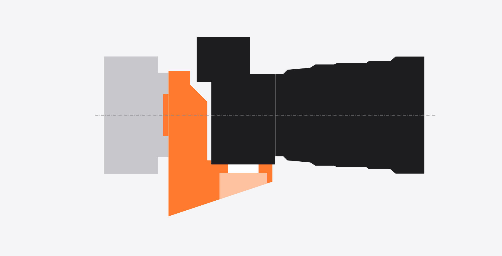
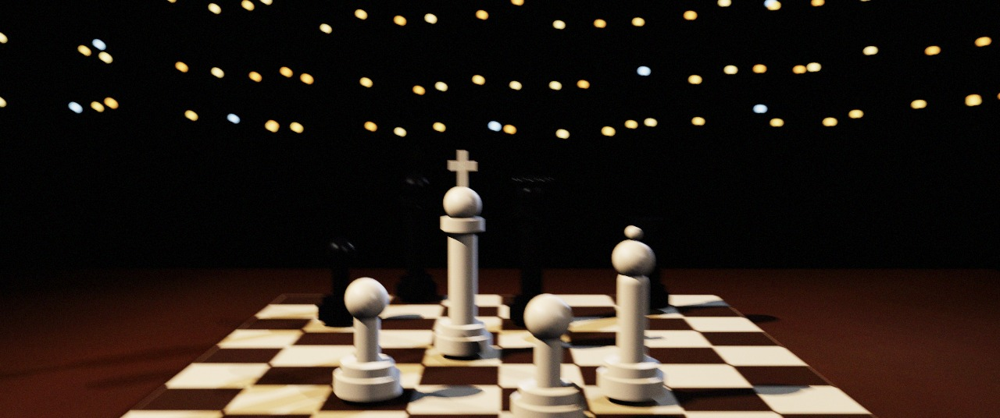
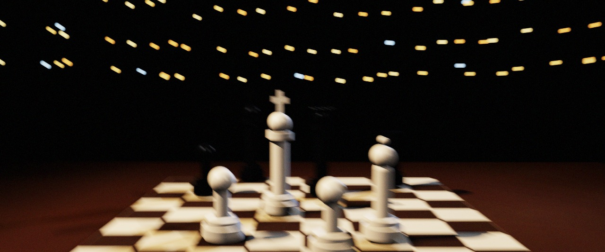
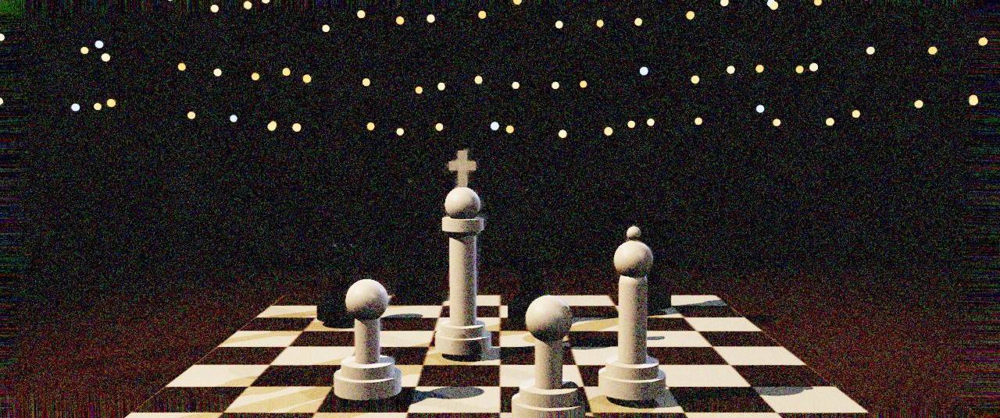
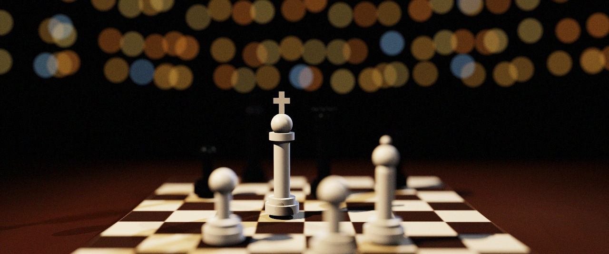
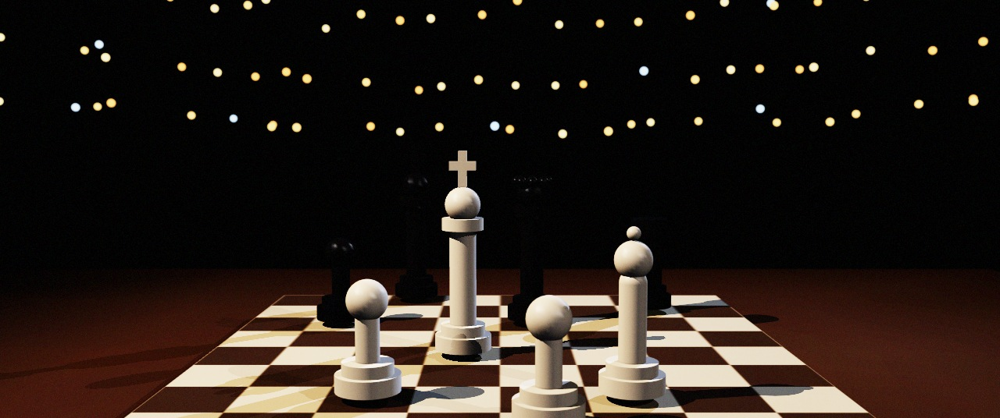
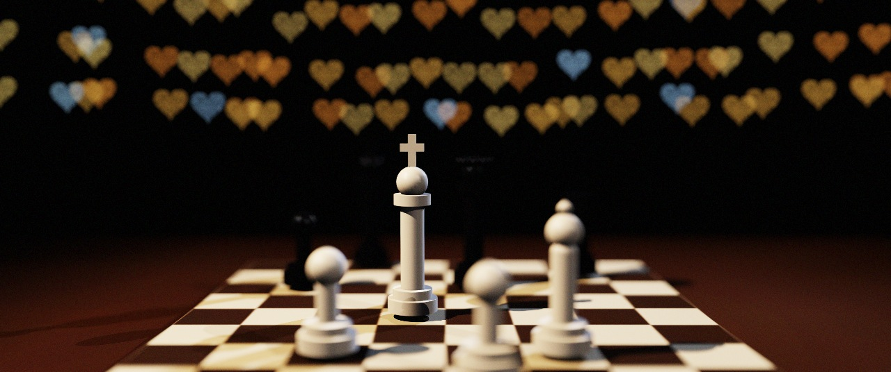
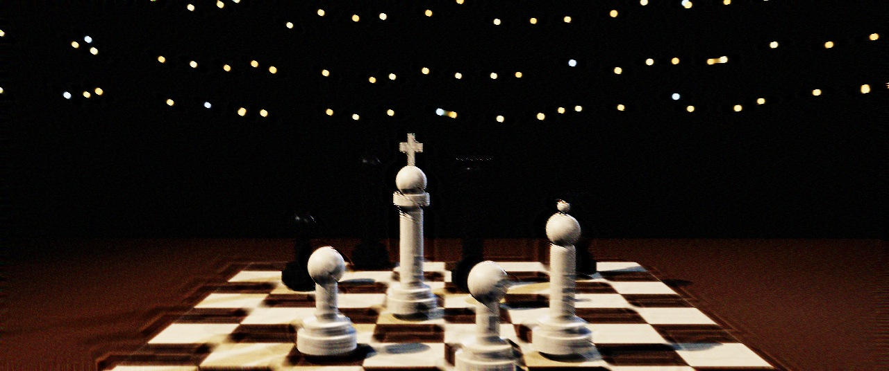
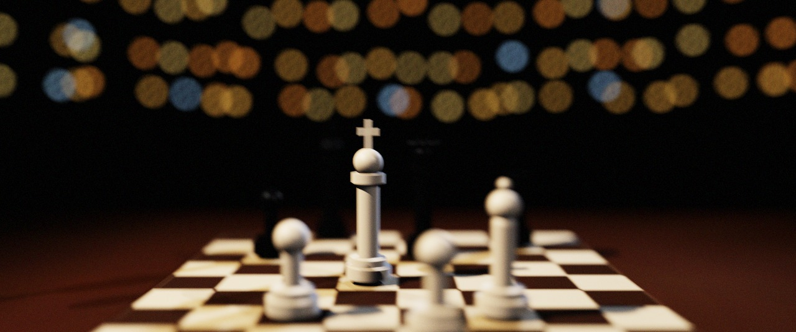
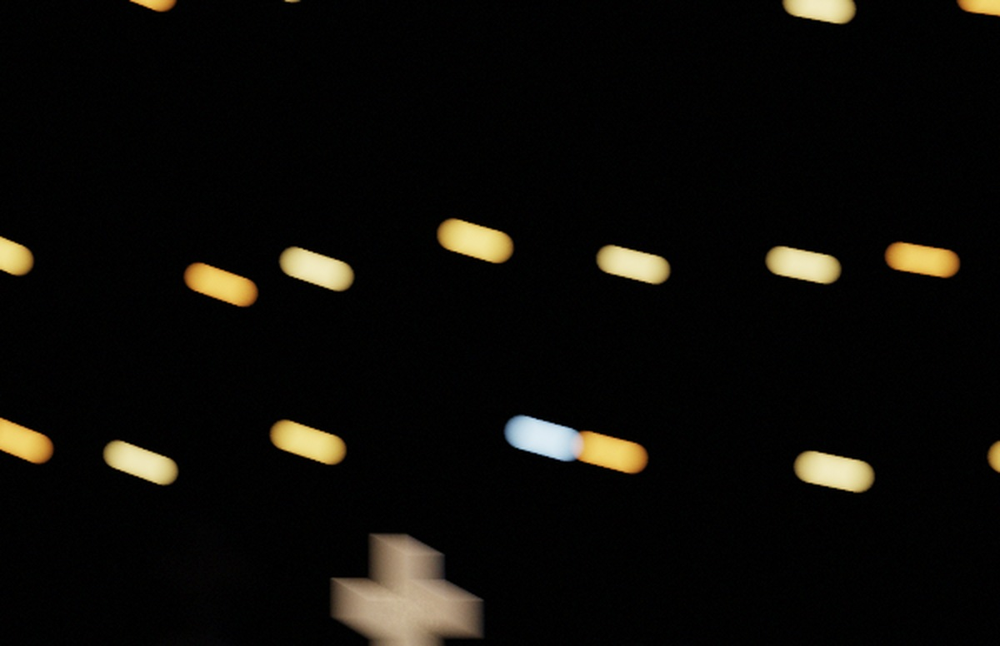

1photo
in
6DoF
velocity out
0.59°/s
median error
0
training images
Move the camera. Read the streaks.
You set
vx0vy0vz0ωx0ωy0ωz0
Read from blurvx0vy0vz0ωx0ωy0ωz0
The robot is the ruler.


One print holds the camera.
Sony a7R III on the Franka flange. Lens on the wrist axis.
1PLA print, 153 g, no supports
5screws, 1 hex key
1.36 kgon the flange, of 3 kg allowed
70 Hzfirst mode, modelled

Three steps. No learning.
1
Measure
Cepstrum peak = blur vector.
2
shutter×geometry×motion
Model
d = τ J(x, Z) ξ
3
Solve
Robust fit over the patches.
Within 4% of the true turning rate.
0.59°/sturning-rate error · 4%
12 mm/sspeed error · 8%
7.0×better than rotation-only
5–25 pxblur length where it works
Too fast, no streak. Too slow, no signal.

1/2501/1251/601/301/151/8
Bokeh hides the streaks.

f/1.4f/2.8f/5.6f/11f/22pinhole
Before. After.


blurredfixedFix the take
+5.7 dB

 1 frame9 frames
1 frame9 framesShoot in the dark
+7.4 dB


f/22, stillf/22, robot orbitThe robot draws the aperture
f/1.4 look

circleheartAny bokeh
one exposure

constant speedacceleratingMove smarter
+1.4 dB

f/1.4f/22Stop down to measure
2.3°/s

 1/250 s1/15 s
1/250 s1/15 sShutter sets the signal
stillmoving
Blur is the measurement
12%
Depth from one blurred frame
Streak length is depth.
Simulation today. The real arm next.
Limits
- 5 to 25 px of blur.
- Small apertures.
- Still scenes.
Next
- Real photos on the Franka.
- A defocus-aware model.